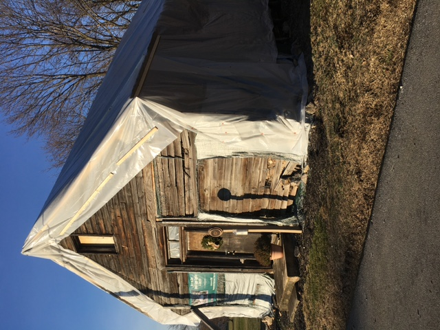

Volunteer
Bring your interest in community history and care. Ask where your time and skills can help.
A church. A cemetery. Generations of Black community history, ready to be heard.

The site from the roadside, at its full portrait ratio. Photo source: Mt. Tabor Preservation Project website; photographer and date unconfirmed.

The people behind the place
Family memories from the Gumby family and the Ward/Smith family’s connection to the cemetery helped neighbours see what this place holds.
Discover the church and cemetery

One place. Many lives.
Mount Tabor’s nineteenth-century church and cemetery connect us to Black community life in Mount Holly Springs after the Civil War. The cemetery is a place of remembrance, family connections and the lives of United States Colored Troops veterans.
Make a connection with this placeChurch exterior, cropped to the siding and doorway; no person appears in this frame. Photo source: Mt. Tabor Preservation Project website; photographer and date unconfirmed.

Care makes continuity possible
Community commitment and preservation expertise have helped the church endure. Its history is recognised; its care continues.
Preservation Pennsylvania included Mount Tabor on its At Risk list. A historical designation, not a description of the building today.
The church and cemetery were listed together in the National Register of Historic Places.
The project received a Pennsylvania Historic Preservation Rehabilitation Award.


Come closer to the story
Visit through Mount Tabor’s tours and shared-history programming. Check the current schedule and ask about the route, parking and access arrangements before coming.
13 Cedar Street
Mount Holly Springs, Pennsylvania
Contact the project for the current schedule. The church is not open on a regular public schedule.
Ask about walking surfaces, parking and available accommodations before your visit.

There is a place for you
Bring your interest in community history and care. Ask where your time and skills can help.
Family memories and historical materials can add to our understanding of this place.
Ask about tours and learning opportunities for your community or group.
Explore visiting
Help care for what connects us
Your support can help sustain the church, cemetery and the work of sharing Mount Tabor’s history.
Donation experience shown for design review.